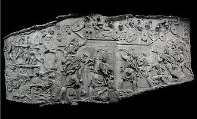
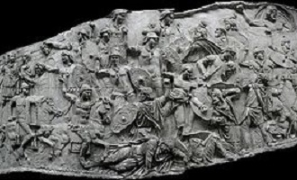

Războaiele Daco-Romane
 |
Războaiele daco-romane au fost conflicte deosebit de sângeroase în urma cărora o parte a Daciei a fost cucerită şi transformată în provincie romană. În teritoriul ocupat a fost declanşat procesul de romanizare, tocmai de aceea aceste războaie reprezintă o pagină deosebit de importantă în istoria românilor.În urma războaielor daco-romane din 101-102 d Hr şi 105-106 dHr o parte a teritoriului locuit de triburile dacice a intrat sub dominaţie romană. Mai precis este vorba despre o zonă aferentă astăzi Transilvaniei, Banatului şi a unei bune părţi a Olteniei dar şi a Dorbrogei. Întregul ţinut menţionat a fost transformat în provincie romană, supus procesului de romanizare.
Tocmai de aceea războaiele daco-romane au o conotaţie aparte în istoriografia românească. În orice caz au fost două conflicte deosebit de importante în lumea antică, post Christum, în special pentru Imperiul Roman, care în acest fel a scăpat de un adversar redutabil în zona carpato-danubiano-pontică. A fost practic un conflict foarte ”mediatizat” la aceea vreme, iar împăratul Traian, unul dintre cei mai buni lideri ai Imperiului Roman, a imortalizat aceste conflict pe un monument care şi astăzi se află în capitala fostului Imperiu Roman şi căruia îi datorăm multe informaţii despre războiele dintre daci şi romani.
Primul război Daco-roman - 101-102
Pe tot parcursul secolului I, strategia politicii romane dicta că amenințările din partea statelor vecine Imperiului să fie eliminate cât mai repede. În ciuda unei oarecare cooperări de natură diplomatică cu Domițian, după o invazie anulată, Decebal a continuat să se opună Romei. Regatul Dac rămăsese prin urmare considerat la Roma ca o puternică amenințare. În acea perioadă, Roma avea de luptat cu problemele financiare provocate de campaniile de cucerire din Europa, în parte datorate conținutului redus de aur din monedele romane stabilit de împăratul Nero. Zvonurile confirmate despre aurul dacic și despre alte bogații ale acestei țări au contribuit și ele la conflictul romano-dac. Alt motiv a fost cel al poziției strategice a Daciei. Ca urmare, noul împărat Traian, el însuși un soldat și tactician experimentat, a început pregătirile pentru un război decisiv împotriva Daciei.
Armata romană era alcătuită din patru legiuni panonice: I, II Adiutrix, XIII și XIV Germina, două legiuni moesice din Moesia Superior: IV Flavia și VII Claudia, trei legiuni moesice din Moesia Inferior: I Italica, V Macedonica, XI Claudia, și altele aduse de la Rin, în total fiind 13-14 legiuni (70 000 de soldați), plus trupele auxiliare că alae și cohortele, dar și formațiuni etnice din rândul altor popoare că mauri, palmireni, asturi. Operațiunile de debarcare erau menținute de flota dunăreană, Classis Flavia Moesica. În total, numărul celor care participau la forța de invazie era de 150 000 de oameni. Comanda trupelor a fost încredințată unor generali și ofițeri veterani, ca Iulius Sabinus, Terentius Scaurinus, Iulius Quadratus Bassus, care vor fi guvernatorii Daciei. Armata dacilor era alcătuită din 50 000 de soldați, din călăreți ce luptau cu arcuri și pedestrași înarmați cu paloșe curbe - siccae, săbii drepte sau curbe - falces, și aveau că stindard balaurul-draco.
În iarna 101-102, Decebal a organizat o diversiune. A trimis trupe dacice împreună cu sarmați, roxolani și burii germanici asupra Dobrogei. Atacurile au surprins garnizoanele romane, iar invadatorii prăduiesc. Traian ordonă participarea la lupta numai a auxilierilor germani. Armata dacă, împreună cu roxolanii și iazigii, a traversat Dunărea înghețată, dar, deoarece nu era destul de frig, gheața s-a rupt sub greutatea lor și mulți au murit în apa înghețată. Traian a plecat cu armata din munți, urmându-i pe daci în Moesia. O prima ciocnire a avut loc în timpul nopții, cu pierderi nesemnificative de ambele părți, și fără un rezultat decisiv. Călăreții roxolani sunt înfrânți. Fiind atacați de pretutindeni, dacii sunt învinși. Bătălia s-a desfășurat la Adamclisi pe locul unde împăratul va fonda "Orașul Victoriei", purtând numele de Nicopolis ad Istrum. Tratativele eșuează, iar luptele se reiau. Traian a ocupat munții intăriți și a găsit armele, mașinile de război romane și stindardul lui Fuscus. Dacii sunt copleșiți de armata romană, mai numeroasă și dotată cu o tehnică militară adecvată pentru asedierea cetăților. Decebal a trebuit să accepte condițiile impuse în schimbul păcii.
|  |  |
 |  |
Cel de-al doilea război Daco-roman - 105-106
Decebal nu respectase acordul, și astfel, Senatul l-a decretat pe Decebal din nou ca "inamic al Romei", iar Traian a pornit cu generalii la un nou război. Trupele romane au părăsit Roma la 4 iunie 105, îmbarcându-se la Brundisium. Traian este întâmpinat de o solie dacă, care îi cere pace. Traian nu acceptă condițiile impuse de regele dac. Decebal însuși a întins o cursa trupelor romane, gata să-l ucidă pe împărat, trimițând dezertori în Moesia. Decebal l-a capturat pe comandantul unei legiuni, Longinus, și l-a obligat să mărturisească planurile împăratului. Longinus nu i-a dezvăluit nimic, iar Decebal a trimis din nou o solie împăratului pentru a cere bani și înapoierea teritoriilor în schimbul eliberării lui Longinus. Traian i-a răspuns prin vorbe îndoielnice că nici nu-l prețuiește, dar nu dorea să-l piardă, dar nici să-l scape cu sacrificii mari. Longinus se otrăvește, nu înainte să trimită o scrisoare plină de rugăminți prin intermediul libertului lui Traian. Decebal făgădui lui Traian că-i va da în schimbul libertului trupul lui Longinus și zece prizonieri. Traian refuză să-l trimită pe libert înapoi. Ostilitățile au reizbucnit. Decebal cere pace după ce a observat că mulți nobili-comati daci au trecut de partea romanilor. Traian și trupele romane au traversat Dunărea pe podul construit. În vara anului 105, romanii au atacat Dacia în mai multe direcții: din vest, prin Banat până spre Valea Mureșului și pe valea Apei Orașului; dinspre sud, de la Drobeta, prin pasul Vâlcan, și apoi, pe valea Oltului. Ultimele cetăți sunt treptat cucerite în vara anului 106, printre care și Sarmizegetusa, unde apărătorii rezistă cu înverșunare. Primul atac a fost respins de apărătorii daci. Romanii au bombardat orașul cu armele lor de asediu și, în același timp, au construit o platforma pentru a ușura intrarea în cetate. Ei au încercuit orașul și cu un zid circumvallatio. În cele din urmă, romanii au distrus conductele de apă ale Sarmizegetusei și au obligat pe daci să se predea înainte că să dea foc la oraș. Forțele romane au reușit să între în incinta sacră dacică, unde l-au salutat pe Traian că împărat și apoi au nivelat (distrus) întreagă cetate. Legiunea a IV-a Flavia Felix a staționat acolo pentru a păzi ruinele Sarmizegetusei. Ca urmare a încheierii asediului, Bicilis, un apropiat al lui Decebal, și-a trădat regele și a condus pe romani la comoara dacică, ascunsă sub râul Sargetia. |
●Concluzii
Războaiele dacice au reprezentat un triumf uriaș pentru Roma și armatele sale. Traian a anunțat 123 de zile de sărbătoare în întreg imperiul. Minele de aur bogate ale Daciei au fost folosite de romani, și se estimează ca Dacia a contribuit atunci cu 700 milioane de dinari pe an la economia romană, asigurând surse importante de finanțare pentru alte campanii romane. Cele două războaie au reprezentat victorii importante în cadrul campaniilor expansioniste ale Romei, câștigând sprijinul și admirația oamenilor pentru Traian. Prin cuceririle ulterioare din Asia, Traian a realizat cea mai mare întindere din istoria Imperiului Roman. O mare parte a populației masculine a Daciei a fost ucisă în luptă, trecută în sclavie sau înrolată în legiuni romane și trimisă să lupte la mare distanță de Dacia, în parte pentru a descuraja alte rebeliuni. Mai puțin de jumătate din Dacia a fost oficial anexată și apoi organizată ca provincie a imperiului.
Perioada de după războaiele dacice a fost, prin folosirea tezaurului dacic și prin preluarea și extinderea exploatării aurului din Carpații Apuseni, una de creștere economică susținută și de relativă pace la Roma. A fost început un mare proiect de construcții, îmbunătățind infrastructura Romei în general. Traian a devenit cu adevărat un împărat civil, deschizând drumul unor întăriri interne ulterioare în cadrul imperiului, ca stat unitar și puternic.